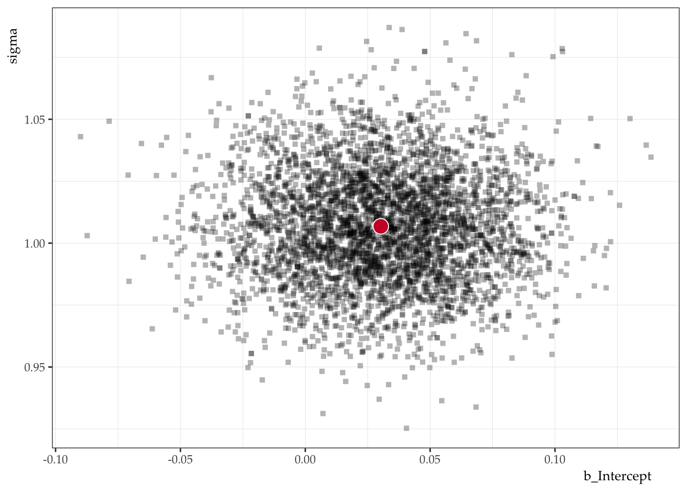
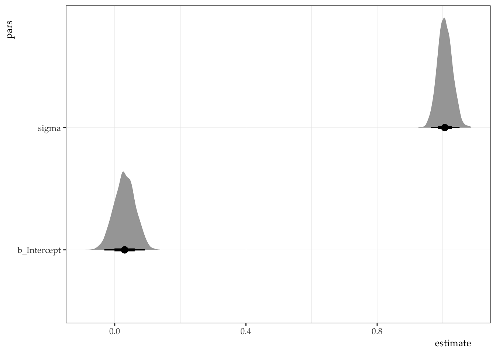

dat_df <- tibble(y = rnorm(1000))
dat_df |> summarize(mean = mean(y), sd = sd(y))# A tibble: 1 × 2
mean sd
<dbl> <dbl>
1 -0.0189 0.970Intercept-only model
The intercept-only model will take the format y ~ 1 in standard lme4-style syntax. We will assume the data generating process for y is a normal distribution, which takes the parameters \(\mu\) and \(\sigma\). The full model can be described in Equation 1:
\[ \begin{aligned} y_{i} & \sim Normal(\mu, \sigma) & [Likelihood]\\ \mu & \sim Normal(0, 1) & [Prior] \\ \sigma & \sim Normal_{+}(0, 1) & [Prior] \\ \end{aligned} \tag{1}\]
First, we will simulate some data from the normal distribution with a mean of 0 and scale 1.
dat_df <- tibble(y = rnorm(1000))
dat_df |> summarize(mean = mean(y), sd = sd(y))# A tibble: 1 × 2
mean sd
<dbl> <dbl>
1 -0.0189 0.970In brms we can fit this model like this:
mod_brms <- brm(
formula = y ~ 1,
family = gaussian(),
prior = c(
prior(normal(0, 1), class = Intercept),
prior(normal(0, 1), class = sigma)
),
data = dat_df,
cores = 4,
file = here("mods", "mod_int")
)Now, we will write the same model in Stan. Note: You have to use the chunk option output.var to access the Stan code after the fact. In this case, we will assign the Stan code to the object model.
functions {
// ... function declarations and definitions ...
}
data {
// ... declarations ...
int<lower=0> n; // number of observations
vector[n] y; // criterion
int prior_only; // Should the likelihood be ignored?
}
transformed data {
// ... declarations ... statements ...
}
parameters {
// ... declarations ...
real Intercept;
real<lower=0> sigma;
}
transformed parameters {
// ... declarations ... statements ...
real lprior = 0;
lprior += normal_lpdf(Intercept | 0, 1);
lprior += normal_lpdf(sigma | 0, 1) - normal_lccdf(0 | 0, 1); // offset scale
}
model {
// ... declarations ... statements ...
// Likelihood
if (!prior_only) {
// Initialize linear predictor term
vector[n] mu = rep_vector(0.0, n);
mu += Intercept;
target += normal_lpdf(y | mu, sigma);
}
target += lprior;
}
generated quantities {
// ... declarations ... statements ...
real b_Intercept = Intercept;
}Now we can fit the model. We have to do a few things:
tidybayes::compose_data to convert our data frame to a list format that plays nicely with Stan.rstan::sampling to fit the object model from the previous chunk.mod.# Get list of data
dat_ls <- dat_df |>
compose_data(prior_only = as.integer(FALSE))
# Fit model
mod <- sampling(
object = model,
data = dat_ls,
cores = 4
)Now we can do all the normal stuff to the model object.
print(mod, pars = c("b_Intercept", "sigma"), probs = c(0.025, 0.975))Inference for Stan model: anon_model.
4 chains, each with iter=2000; warmup=1000; thin=1;
post-warmup draws per chain=1000, total post-warmup draws=4000.
mean se_mean sd 2.5% 97.5% n_eff Rhat
b_Intercept 0.03 0 0.03 -0.03 0.09 3773 1
sigma 1.01 0 0.02 0.96 1.05 3518 1
Samples were drawn using NUTS(diag_e) at Wed Aug 27 22:56:54 2025.
For each parameter, n_eff is a crude measure of effective sample size,
and Rhat is the potential scale reduction factor on split chains (at
convergence, Rhat=1).posterior <- as.data.frame(mod)
posterior |>
ggplot() +
aes(x = b_Intercept, y = sigma) +
geom_point(pch = 15, alpha = 0.3) +
geom_point(
data = posterior |> summarize(b_Intercept = mean(b_Intercept), sigma = mean(sigma)),
pch = 21, color = "white", fill = "#cc0033", size = 5
) +
ds4ling::ds4ling_bw_theme()
posterior |>
pivot_longer(
cols = c("b_Intercept", "sigma"),
names_to = "pars",
values_to = "estimate"
) |>
ggplot() +
aes(x = estimate, y = pars) +
stat_halfeye() +
ds4ling::ds4ling_bw_theme()